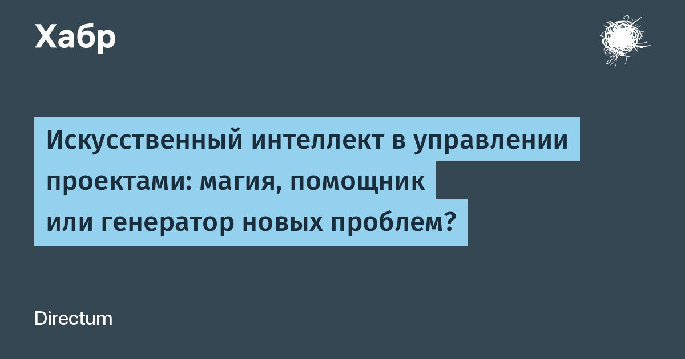

Искусственный интеллект в управлении проектами: магия, помощник или генератор новых проблем?
На сцене — руководитель проекта.
В отчете, который он через несколько часов предоставит топам, все хорошо: задачи выполняются, бюджет под контролем, критических рисков нет.
Только вот за кулисами скрывается одна большая проблема — ключевой разработчик ждет доступы от заказчика уже неделю.
Из-за этого тестирование не началось, а команда продолжает планировать работы так, будто ничего не произошло.
Добро пожаловать на голодные игры в мир управления проектами, где между статусом в системе и реальным положением дел иногда простирается пропасть.
Читать далее